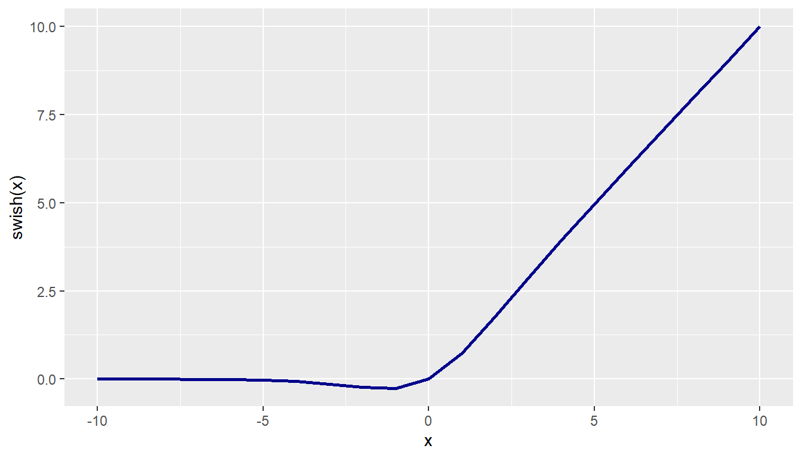
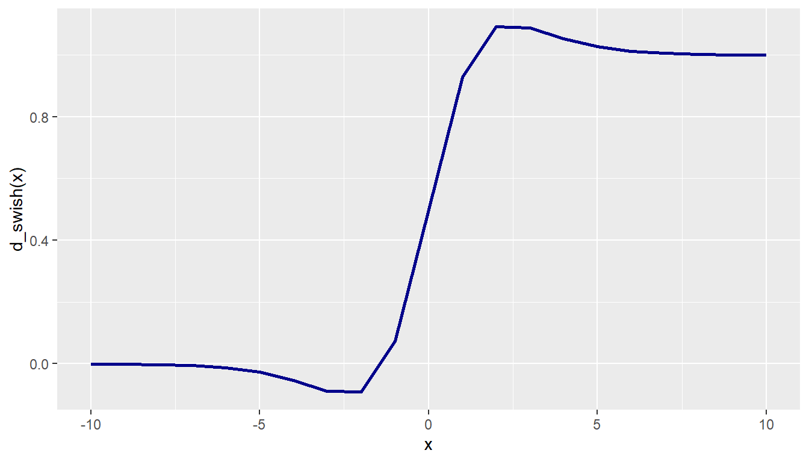

── Attaching core tidyverse packages ──────────────────────── tidyverse 2.0.0 ──
✔ dplyr 1.2.1 ✔ readr 2.2.0
✔ forcats 1.0.1 ✔ stringr 1.6.0
✔ ggplot2 4.0.3 ✔ tibble 3.3.1
✔ lubridate 1.9.5 ✔ tidyr 1.3.2
✔ purrr 1.2.2
── Conflicts ────────────────────────────────────────── tidyverse_conflicts() ──
✖ dplyr::filter() masks stats::filter()
✖ dplyr::lag() masks stats::lag()
ℹ Use the conflicted package (<http://conflicted.r-lib.org/>) to force all conflicts to become errors
Task 1: Analyzing Country-Level Statistics on Methane Emissions
About the Data
The datasets used in this analysis are from the World Bank and focus on two main indicators: methane emissions and total population. The main indicator we will be analysing is methane emissions, measured in kilotonnes of CO₂ equivalent under the indicator code EN.ATM.METH.KT.CE.
According to the World Bank metadata, methane emissions refer to emissions arising from human activities, especially agriculture and industrial methane production. This is important to study because methane is a major greenhouse gas that contributes significantly to climate change, even though it is usually released in smaller quantities than carbon dioxide. By analysing methane emissions across countries and over time, we can better understand which countries or regions contribute more heavily to this form of environmental pressure.
The population dataset, measured using the World Bank indicator SP.POP.TOTL, provides total population based on the by right definition, meaning it counts all residents regardless of legal status or citizenship, using midyear estimates. Studying population alongside methane emissions is useful because population size can affect total emissions, resource demand, agriculture, energy use, and industrial activity. Together, these datasets allow for a more meaningful analysis of environmental impact in relation to demographic size.
Cleaning the Data
clean_up_wb_csv <-function( in_file_name, out_file_name) {# Read the raw World Bank CSV file, skipping the metadata rows wb_clean <- readr::read_csv( in_file_name,skip =4,na =c("", ".."),show_col_types =FALSE )# Remove empty/unnamed columns created by the CSV import wb_clean <- wb_clean |> dplyr::select(-dplyr::starts_with("..."))# Rename the main columns so they are easier to use in R wb_clean <- wb_clean |> dplyr::rename(country_name =`Country Name`,country_code =`Country Code`,indicator_name =`Indicator Name`,indicator_code =`Indicator Code` )# Write the cleaned dataset to the output file readr::write_csv( wb_clean, out_file_name )# Return the cleaned dataset as wellreturn(wb_clean)}
population <-clean_up_wb_csv(in_file_name ="data/world_bank_total_population/API_SP.POP.TOTL_DS2_en_csv_v2_267553.csv",out_file_name ="data/world_bank_total_population/population.csv")
population_reduced <- population |>semi_join(country_codes, by =c("country_code"="country_code"))indicator_reduced <- indicator |>semi_join(country_codes, by =c("Country Code"="country_code"))
nrow(population_reduced)
[1] 217
nrow(indicator_reduced)
[1] 225
Analyzing Country-Level Data
# Task 1.4 - Top 10 Countries by Indicator Value and Per Capita Analysislibrary(tidyverse)library(gt)# Read the cleaned dataindicator <-read_csv("data/indicators/indicator.csv")
Rows: 292 Columns: 70
── Column specification ────────────────────────────────────────────────────────
Delimiter: ","
chr (4): country_name, country_code, indicator_name, indicator_code
dbl (51): 1970, 1971, 1972, 1973, 1974, 1975, 1976, 1977, 1978, 1979, 1980, ...
lgl (15): 1960, 1961, 1962, 1963, 1964, 1965, 1966, 1967, 1968, 1969, 2021, ...
ℹ Use `spec()` to retrieve the full column specification for this data.
ℹ Specify the column types or set `show_col_types = FALSE` to quiet this message.
population <-read_csv("data/world_bank_total_population/population.csv")
Rows: 266 Columns: 70
── Column specification ────────────────────────────────────────────────────────
Delimiter: ","
chr (4): country_name, country_code, indicator_name, indicator_code
dbl (65): 1960, 1961, 1962, 1963, 1964, 1965, 1966, 1967, 1968, 1969, 1970, ...
lgl (1): 2025
ℹ Use `spec()` to retrieve the full column specification for this data.
ℹ Specify the column types or set `show_col_types = FALSE` to quiet this message.
Rows: 218 Columns: 3
── Column specification ────────────────────────────────────────────────────────
Delimiter: ","
chr (3): country_name_en, country_code, un_subregion
ℹ Use `spec()` to retrieve the full column specification for this data.
ℹ Specify the column types or set `show_col_types = FALSE` to quiet this message.
# Reshape indicator data from wide to long formatindicator_long <- indicator |>pivot_longer(cols =matches("^[0-9]+$"),names_to ="year",values_to ="indicator_value" ) |>mutate(year =as.numeric(year)) |>filter(!is.na(indicator_value))# Reshape population data from wide to long formatpopulation_long <- population |>pivot_longer(cols =matches("^[0-9]+$"),names_to ="year",values_to ="population" ) |>mutate(year =as.numeric(year)) |>filter(!is.na(population)) |>select(country_code, year, population)# Find the most recent year in the indicator datamost_recent_year <- indicator_long |>pull(year) |>max()# 1.4.1 - Top 10 countries by indicator value (most recent year, with ties)top_countries <- indicator_long |>filter(year == most_recent_year) |>left_join(population_long |>filter(year == most_recent_year),by =c("country_code", "year")) |>filter(!is.na(indicator_value), !is.na(population)) |>semi_join(country_codes, by =c("country_code"="country_code")) |>select(country_name, country_code, population, indicator_value) |>mutate(rank_by_population =dense_rank(desc(population)),rank_by_indicator =dense_rank(desc(indicator_value)) ) |>filter(rank_by_indicator <=10) |>arrange(desc(indicator_value), desc(population))# Display using gt for better formattinggt(top_countries)
country_name
country_code
population
indicator_value
rank_by_population
rank_by_indicator
China
CHN
1411100000
9490281
1
1
United States
USA
331577720
5985931
3
2
India
IND
1402617695
5581237
2
3
Russia
RUS
145245148
4937818
9
4
Brazil
BRA
208660842
3593712
7
5
Indonesia
IDN
274814866
2671959
4
6
Iran
IRN
87723443
1397136
17
7
Pakistan
PAK
235001746
1355426
5
8
Nigeria
NGA
213996181
1208478
6
9
Mexico
MEX
126799054
1147847
10
10
# Make sure libraries are loadedlibrary(tidyverse)library(gt)# 1.4.2 - Top 10 countries by indicator per capita (most recent year, with ties)indicator_per_capita <- indicator_long |>filter(year == most_recent_year) |>left_join(population_long |>filter(year == most_recent_year),by =c("country_code", "year")) |>filter(!is.na(indicator_value), !is.na(population)) |>semi_join(country_codes, by =c("country_code"="country_code")) |>select(country_name, country_code, indicator_value, population) |>mutate(indicator_per_capita = indicator_value / population,rank_per_capita =dense_rank(desc(indicator_per_capita)) ) |>filter(rank_per_capita <=10) |>select(country_name, country_code, indicator_per_capita, rank_per_capita) |>arrange(desc(indicator_per_capita))# Display using gt for better formattinggt(indicator_per_capita)
country_name
country_code
indicator_per_capita
rank_per_capita
Turkmenistan
TKM
0.14367796
1
Grenada
GRD
0.14074888
2
Bahrain
BHR
0.09586407
3
Qatar
QAT
0.08792202
4
Barbados
BRB
0.06700995
5
New Zealand
NZL
0.05085078
6
United Arab Emirates
ARE
0.04845823
7
Uruguay
URY
0.04799951
8
Mongolia
MNG
0.04366286
9
Kuwait
KWT
0.04116228
10
The top countries by absolute methane emissions largely align with expectations based on population size and economic development, with notable exceptions that reveal important patterns. China leads significantly with 9.49 million kilotons of emissions, followed by the United States and India, which collectively account for the majority of global methane output. However, the ranking by population (China, India, United States) versus by indicator value demonstrates that sheer population size does not perfectly predict emission levels. For instance, the United States ranks 3rd in population but 2nd in total emissions, suggesting higher per-capita emissions and greater industrial activity. When examining per-capita metrics, the rankings shift dramatically, revealing countries with disproportionately high or low emission intensities relative to their populations.
This divergence between absolute and per-capita rankings underscores critical insights: wealthy, industrialized nations with smaller populations often have higher per-capita emissions due to energy-intensive economies, manufacturing, and resource extraction, while populous developing nations may have lower per-capita values despite high absolute totals. These differences reflect varying development stages, economic structures, and energy sources—wealthy nations rely more on fossil fuels and intensive agriculture, while developing nations may have less industrialization despite larger populations. Understanding both metrics is essential for climate policy, as it reveals where emission reduction efforts should target absolute numbers versus efficiency improvements.
# 1.4.3 - Countries with above median population but below median per capita indicator# Calculate global medians for the most recent yearall_data_recent <- indicator_long |>filter(year == most_recent_year) |>left_join(population_long |>filter(year == most_recent_year),by =c("country_code", "year")) |>filter(!is.na(indicator_value), !is.na(population)) |>semi_join(country_codes, by =c("country_code"="country_code")) |>select(country_name, country_code, indicator_value, population) |>mutate(indicator_per_capita = indicator_value / population)median_population <-median(all_data_recent$population, na.rm =TRUE)median_per_capita <-median(all_data_recent$indicator_per_capita, na.rm =TRUE)# Find countries with high population but low per capita indicatorhigh_pop_low_capita <- all_data_recent |>filter(population > median_population, indicator_per_capita < median_per_capita) |>select(country_name, country_code, population, indicator_per_capita) |>arrange(desc(population))# Display summary statisticscat("Total number of countries with above median population and below median per capita indicator:",nrow(high_pop_low_capita), "\n\n")
Total number of countries with above median population and below median per capita indicator: 56
# Display top 10 by populationgt(head(high_pop_low_capita, 10))
country_name
country_code
population
indicator_per_capita
China
CHN
1411100000
0.006725449
India
IND
1402617695
0.003979158
Pakistan
PAK
235001746
0.005767727
Nigeria
NGA
213996181
0.005647195
Bangladesh
BGD
166298024
0.004276852
Japan
JPN
126261000
0.001633652
Ethiopia
ETH
118917671
0.006367133
Philippines
PHL
112081264
0.004691025
Egypt
EGY
109315124
0.004713194
Vietnam
VNM
98079191
0.006494282
The identification of countries with above-median populations but below-median per capita indicator values reveals a critical developmental and environmental pattern distinct from both previous rankings. These nations represent a unique challenge: while they contribute substantially to global totals due to sheer population size, their per-capita metrics suggest relatively lower emission intensities compared to wealthier, industrialized nations. This phenomenon indicates that these countries may be in early or mid-stages of industrialization, with developing infrastructure and lower energy consumption per person compared to developed economies. Alternatively, it could reflect economic structures reliant on agriculture or services rather than energy-intensive manufacturing. Compared to the absolute rankings (dominated by large industrial powers like China, USA, and India) and per-capita rankings (which tend to show wealthy developed nations), this group occupies a middle ground.
For climate policy, these countries are particularly important: they have significant room for emissions growth as development progresses, yet currently maintain relatively low per-capita footprints. Without proper intervention and investment in clean energy infrastructure, these nations could become major emitters as their economies expand. This “large population, low intensity” profile suggests both vulnerability and opportunity—these countries need support to pursue sustainable development pathways rather than replicating the carbon-intensive industrialization models of today’s highest emitters.
Task 2: Activation Function Analysis
Visualizing swish() Activation Function and its Gradient
# Define the Swish activation functionswish <-function(x) { x / (1+exp(-x))}# Generate data and plotx <--10:10y <-swish(x)tbl_swish <-tibble(x, y)ggplot(tbl_swish, aes(x, y)) +geom_line(color ="darkblue", linewidth =1) +labs(x ="x", y ="swish(x)")

Figure 2: Swish Activation Function
# Define the derivative (gradient) of the swish function# f'(x) = sigma(x) + swish(x) * (1 - sigma(x))d_swish <-function(x) { sig <-1/ (1+exp(-x)) sig +swish(x) * (1- sig)}# Execute the test call and visualizex <--10:10y <-d_swish(x)tbl_d_swish <-tibble(x, y)ggplot(tbl_d_swish, aes(x, y)) +geom_line(color ="darkblue", linewidth =1) +labs(x ="x", y ="d_swish(x)")

Figure 3: Gradient of Swish Activation Function
ReLU is highly efficient because its simple step-function gradient (0 or 1) avoids complex math, but its hard zero for negative inputs can cause dead neurons. In contrast, Swish’s non-zero gradient for negative values prevents dead neurons, improving performance in deep networks at the cost of higher computational overhead.
Toy Examples Calling swish() and relu()
# 1. Define the ReLU functionrelu <-function(x) {pmax(0, x)}# 2. Seed calculation using Student IDseed_numbers <-c(2500466, 2500668, 2500737, 2500853, 2501043)my_seed <-median(seed_numbers)set.seed(my_seed)# 3. Generate the vector x from a uniform distribution (-10 to 10)x <-runif(100, min =-10, max =10)# 4. Create the initial tibble with rounded valuesactivation_tbl <-tibble(x = x,swish_x =round(swish(x), 2),relu_x =round(relu(x), 2))head(activation_tbl, 10)
These statistics support the claim that “swish()” prevents dead neurons. In the simulation, nearly half of the “relu_x” outputs evaluated to exactly zero, killing the gradient. Conversely, “swish_x” produces small negative values, allowing gradients to continuously propagate backward.
# 7. Reshaping tibble into long formamtlong_activation_tbl <- activation_tbl |>select(x, swish_x, relu_x) |># Not using is_dead columnpivot_longer(cols =c(swish_x, relu_x),names_to ="function_name",values_to ="activation_value" )head(long_activation_tbl, 10)
# A tibble: 2 × 5
function_name mean sd min max
<chr> <dbl> <dbl> <dbl> <dbl>
1 relu_x 2.28 2.88 0 8.83
2 swish_x 2.20 2.90 -0.28 8.82
Exploring Other Activation Functions
Leaky ReLU is a modified version of the Rectified Linear Unit that allows a small, non-zero gradient when the unit is not active, preventing the dying neuron problem.
# 1. Define Leaky ReLU activation functionleaky_relu <-function(x) {ifelse(x >0, x, 0.01* x)}# 2. Add the outputs as a new columnactivation_tbl <- activation_tbl |>mutate(leaky_relu_x =round(leaky_relu(x), 2))# First 10 rows displayedactivation_tbl |>select(x, swish_x, relu_x, leaky_relu_x) |>head(10)
Our teams used a combination of ChatGPT, Claude and Gemini. ChatGPT allows us to uploaded sources into a project, and before it answers our prompt it will check through the contents in the project source. We think that this function is very useful so that the prompts will be somewhat related to what we learn in class. We also used different Gen AI tools to cross check our work, and after that check through it ourselves to compare and see which solution makes more sense. One issue that our group faced when using ChatGPT was that it gave us “Too much” help in a sense where it assumed that we needed extra features when all we asked was for it to check if the code was able to clean the data (example: task 1.1). Another issue was that GPT kept re-defining the code and functions, compared to when you code yourself, you will already know that you have defined the function beforehand and thus will not have to define it moving on.
During this assessment, our teams ran into merge conflicts error, and GPT was able to guide us to the solutions to fix this. Thus, this was useful because it allowed us to resolve the issue quickly and continue our work so that we can meet the deadline on time.
Overall, GenAI was helpful for debugging, checking logic, and understanding errors, but we still had to evaluate its suggestions so as to ensure that our final work matched the assignment requirements.
In the future, we think that AI will serve as permanent co-pilot assistants to people writing code, whether for data engineering or not. We think that it is important to still know what the fundamentals are, so that we are able to check and validate the outputs given to use by AI as it might not always be correct